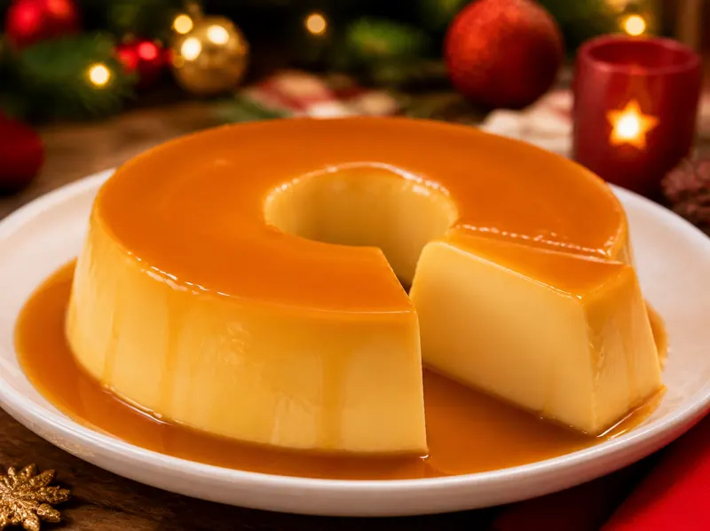
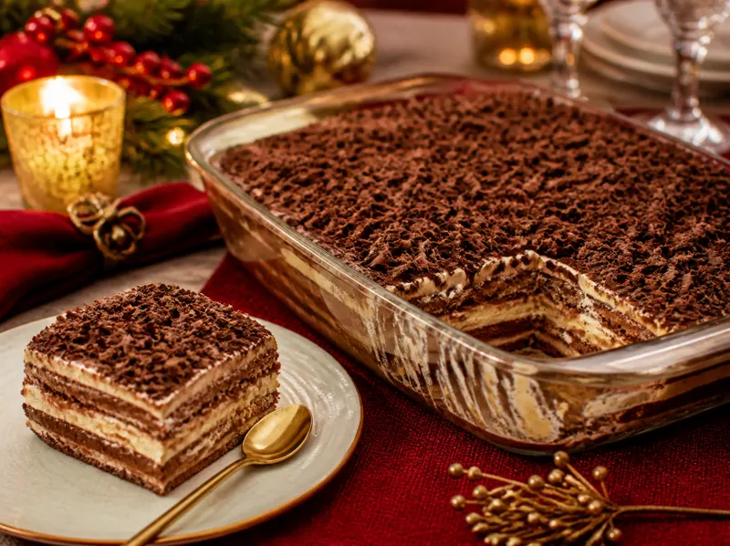
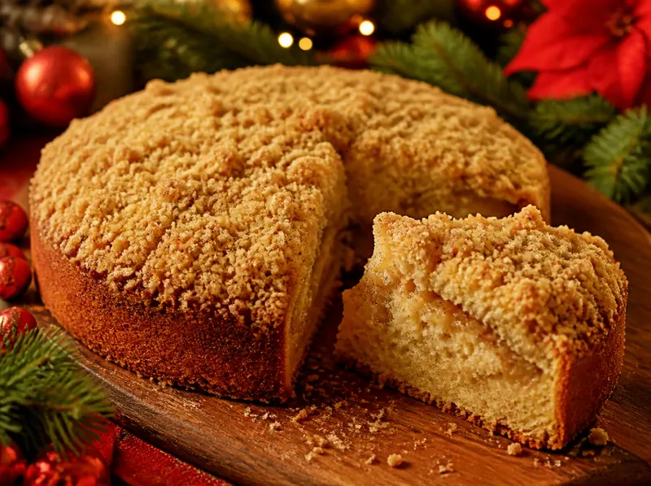
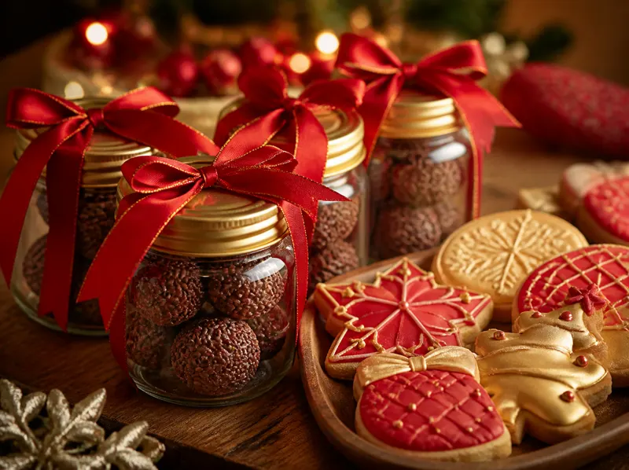
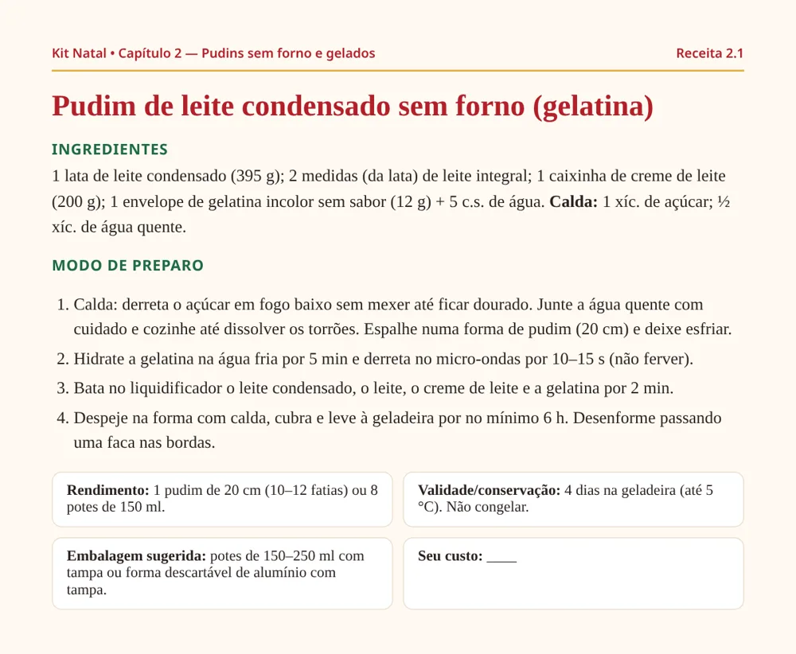
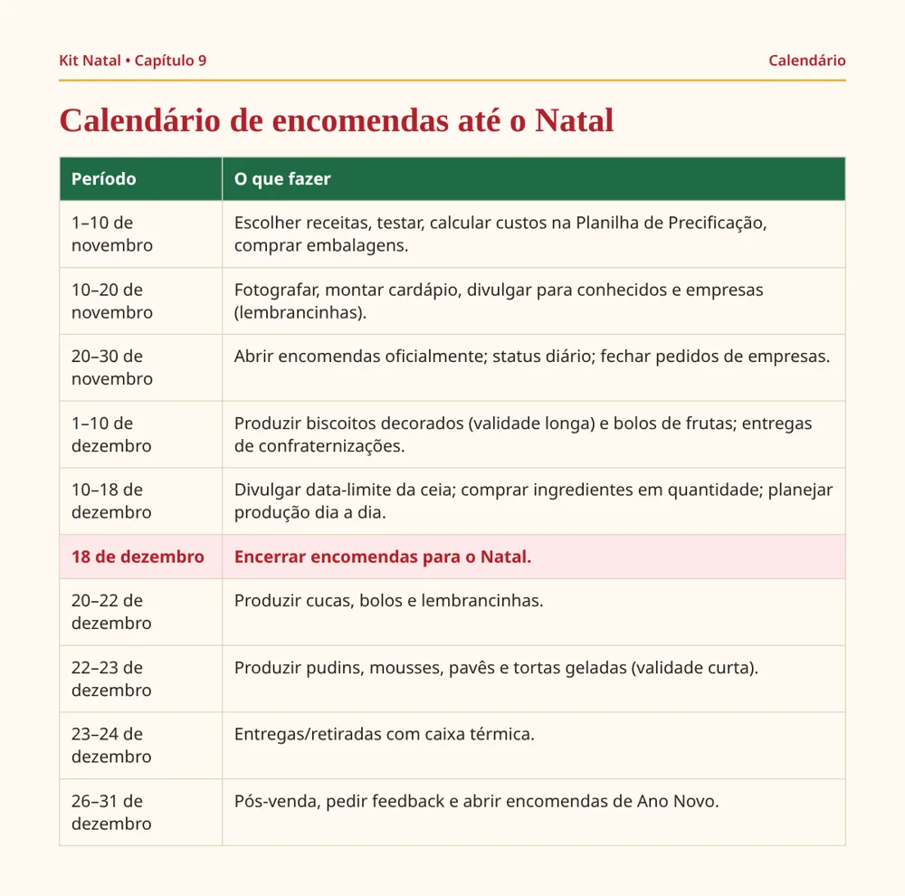
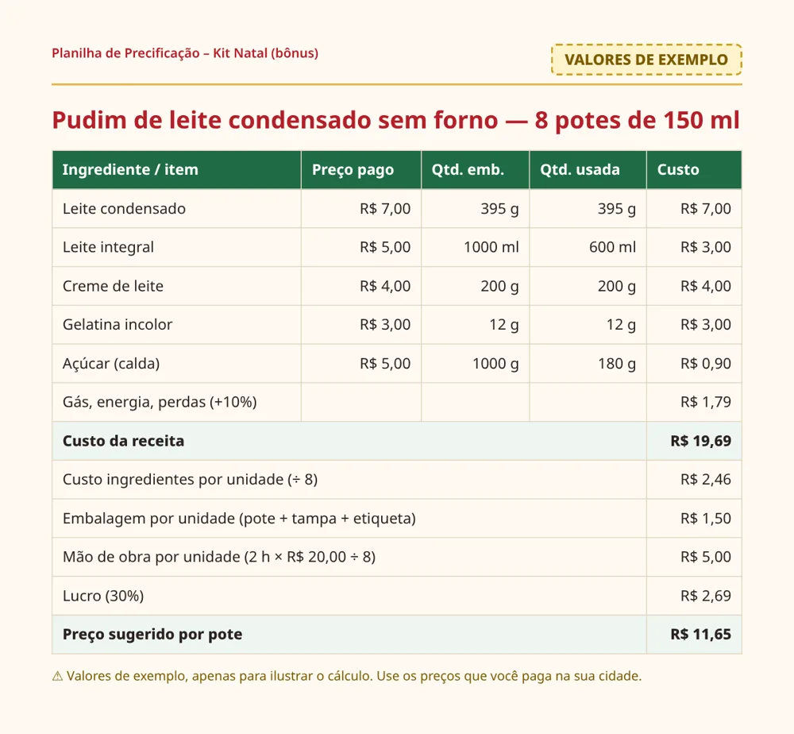

Lembrancinhas e sobremesas de Natal que você consegue fazer na cozinha de casa
Para quem é:
- Quem está começando na cozinha e quer receitas com passo a passo claro.
- Quem quer preparar produtos natalinos para vender para amigos, vizinhos ou encomendas.
- Quem não tem forno grande (ou não quer depender dele): 14 das 20 receitas não usam forno.
- Quem quer saber o rendimento, a validade e a embalagem de cada receita antes de aceitar encomendas.
- Quem prefere um material direto, em PDF, para consultar no celular.
Pudins sem forno, sobremesas na travessa, cucas e lembrancinhas: as 20 receitas do kit




Pudins sem forno e gelados (6)
- Pudim de leite condensado sem forno
- Pudim de chocolate sem forno
- Pudim de leite ninho com calda de frutas vermelhas
- Pudim de pão (no fogão, em banho-maria na panela)
- Gelado de abacaxi com coco (copinho)
- Manjar de coco com calda de ameixa
Sobremesas na travessa (6)
- Pavê de chocolate clássico
- Mousse de maracujá
- Torta gelada de limão
- Pavê de pêssego
- Delícia de abacaxi
- Bombom de travessa (morango)
Cucas e bolos de Natal (vão ao forno) (5)
- Cuca de banana com farofa
- Bolo de Natal com frutas cristalizadas
- Bolo de chocolate com brigadeiro
- Bolo de cenoura de Natal
- Cuca alemã de uva
Lembrancinhas de Natal (3)
- Brigadeiro em pote
- Biscoito amanteigado decorado (vai ao forno)
- Panetone de pote (pavê de panetone)
14 das 20 receitas não usam forno (algumas usam o fogão). As cucas, os bolos e o biscoito decorado são assados. O PDF também traz capítulos sobre embalagem e apresentação, como precificar, como vender pelo WhatsApp e um calendário de encomendas até o Natal.
Pagamento seguro pela Hotmart
Veja por dentro
Páginas reproduzidas do conteúdo do e-book.



🎁 Bônus grátis: Planilha de Precificação – Kit Natal
Incluída nos R$ 27. Some custos de ingredientes, embalagem e mão de obra e chegue a um preço sugerido para cada receita.
➕ Adicional opcional no checkout
Na página de pagamento da Hotmart você pode incluir, se quiser, etiquetas de validade prontas, editáveis e para imprimir, de cada receita, por R$ 9,90. É opcional: o Kit Natal funciona completo sem elas.
🛡️ Garantia de 7 dias
Compra processada pela Hotmart com garantia incondicional de 7 dias. Se não gostar, solicite o reembolso dentro do prazo diretamente pela Hotmart.
Perguntas frequentes
Como recebo o material?
Após a confirmação do pagamento, a Hotmart envia o acesso para o seu e-mail.
É um produto físico?
Não. É um e-book em PDF, para ler no celular, tablet ou computador, ou imprimir.
Preciso ter experiência?
Não. As receitas foram selecionadas pensando em iniciantes.
O que é o adicional de R$ 9,90?
São etiquetas de validade prontas, editáveis e para imprimir, de cada receita. Elas aparecem como opção no checkout e só são cobradas se você marcar.
Quais as formas de pagamento?
As opções disponíveis no checkout da Hotmart (como cartão, Pix e boleto, conforme disponibilidade).
E se eu não gostar?
Você tem 7 dias de garantia para pedir reembolso pela Hotmart.
Vou ganhar dinheiro com certeza?
Não prometemos ganhos. O kit traz receitas e uma ferramenta de precificação; os resultados dependem de você e do seu mercado.
Os resultados de vendas são garantidos?
Não. Este material é educativo. Resultados de vendas dependem de muitos fatores e não são garantidos.
Monte suas encomendas de Natal, várias sem ligar o forno
20 receitas com rendimento, validade e embalagem + Planilha de Precificação grátis • R$ 27
Pagamento seguro pela Hotmart